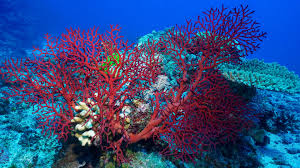
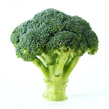
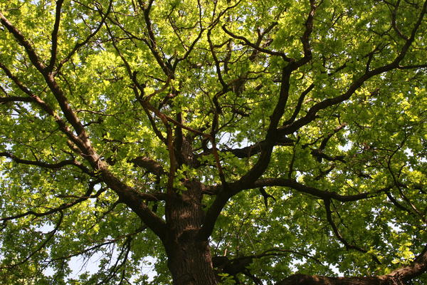
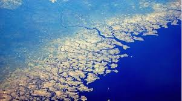
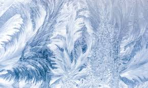
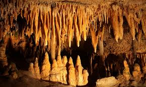

Применение фракталов
«Великая книга Природы написана на языке геометрии»
Галилео Галилей.
Природные фракталы
В живой природе:



|
В неживой природе:



|
Фракталы в литературе
Среди литературных произведений есть такие, которые обладают текстуальной, структурной или фрактальной природой. В литературных фракталах бесконечно повторяются элементы текста:
|
У попа была собака, он ее любил. Она съела кусок мяса, он ее убил. В землю закопал, Надпись написал: У попа была собака… |
Вот дом. Который построил Джек. А вот пшеница. Которая в тёмном чулане хранится В доме, Который построил Джек А вот весёлая птица-синица, Которая ловко ворует пшеницу, Которая в тёмном чулане хранится В доме, Который построил Джек… |
Фракталы в экономике
Последнее время фракталы стали популярны у экономистов для анализа курса фондовых бирж, валютных и торговых рынков. Фракталы появляются на рынке достаточно часто.Фракталы в играх
Сегодня в очень многих играх (пожалуй самый яркий пример Minecraft), где присутствуют разного рода природные ландшафты, так или иначе используются фрактальные алгоритмы. Создано большое количество программ для генерации ландшафтов и пейзажей, основанных на фрактальных алгоритмах.Фракталы в кино
В кино для создания различных фантастических пейзажей используется фрактальный алгоритм. Фрактальная геометрия позволяет художникам по спецэфффектам без труда создавать такие объекты как облака, дым, пламя, звёздное небо и т.д. Что уж тогда говорить о фрактальной анимации, это действительное потрясающее зрелище.Электронная музыка
Зрелищность фрактальной анимации с успехом используют виджеи. Особенно часто такие видеоинсталляции используются на концертах исполнителей электронной музыки. Сочинение музыки на основе фрактальных объектах. Программы, моделируют сочинение музыки на основе фрактальных объектов. Одну из наиболее известных подобных программ – MusiNum – разработал Ларс Киндерман. Модули программы позволяют делать выбор голосов, устанавливать темп композиции, задавать сценарий, который позволяет изменять параметры синтеза музыки в процессе исполнения композиции. Можно выбрать характер звучания, панораму и громкость голоса.Фракталы в физике
В физике фракталы применяются очень широко. В физике твёрдых тел фрактальные алгоритмы позволяют точно описывать и предсказывать свойства твёрдых, пористых, губчатых тел, аэрогелей. Это помогает в создании новых материалов с необычными и полезными свойствами. Пример твёрдого тела - кристаллы.При помощи фракталов также можно смоделировать языки пламени.
Фрактальные антенны
Использование фрактальной геометрии при проектировании антенных устройств было впервые применено американским инженером Натаном Коэном, который тогда жил в центре Бостона, где была запрещена установка на зданиях внешних антенн. Натан вырезал из алюминиевой фольги фигуру в форме кривой Коха и наклеил её на лист бумаги, а затем присоединил к приёмнику. Оказалось, что такая антенна работает не хуже обычной. И хотя физические принципы работы такой антенны не изучены до сих пор, это не помешало Коэну основать собственную компанию и наладить их серийный выпуск.Фракталы широко применяются в компьютерной графике для построения изображений природных объектов, таких, как деревья, кусты, горные ландшафты, поверхности морей и т. д.
С помощью этого метода создаются реалистичные изображения природных объектов, таких, например, как листья папоротника, деревья, при этом неоднократно применяются преобразования, которые двигают, изменяют в размере и вращают части изображения.